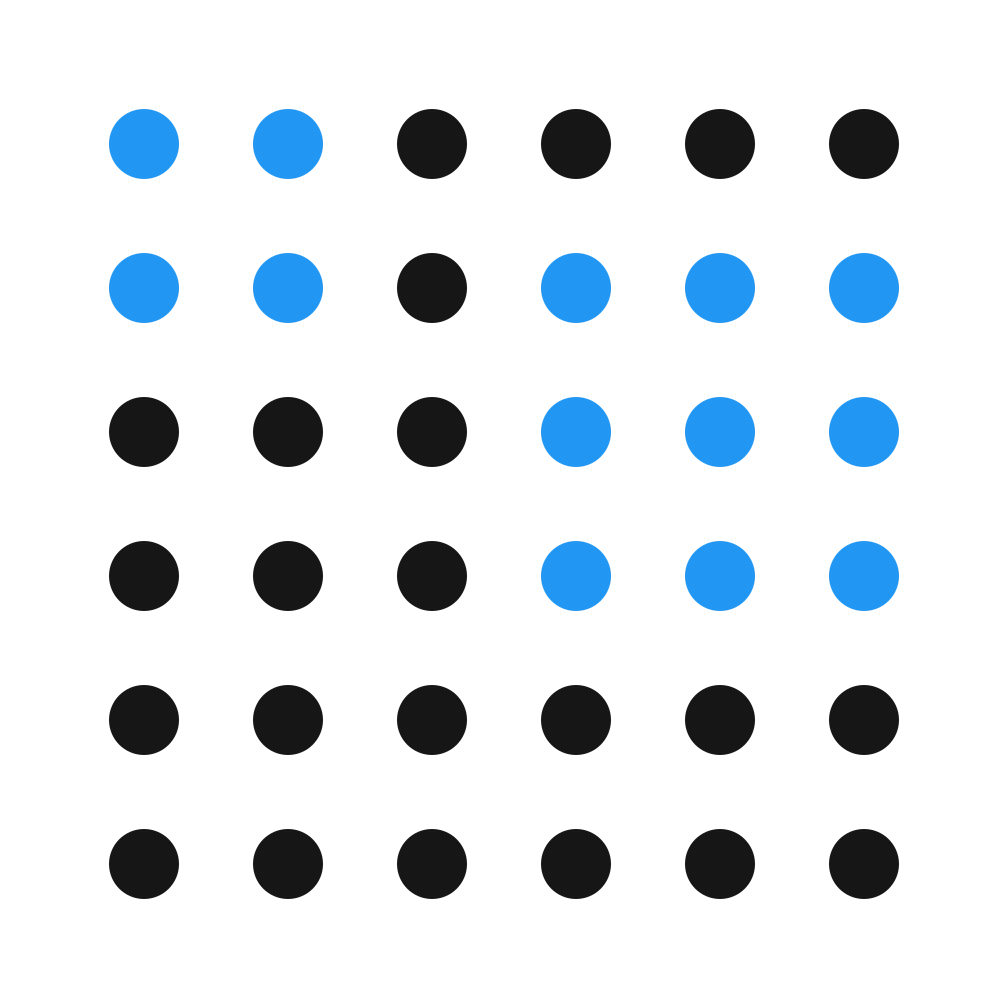
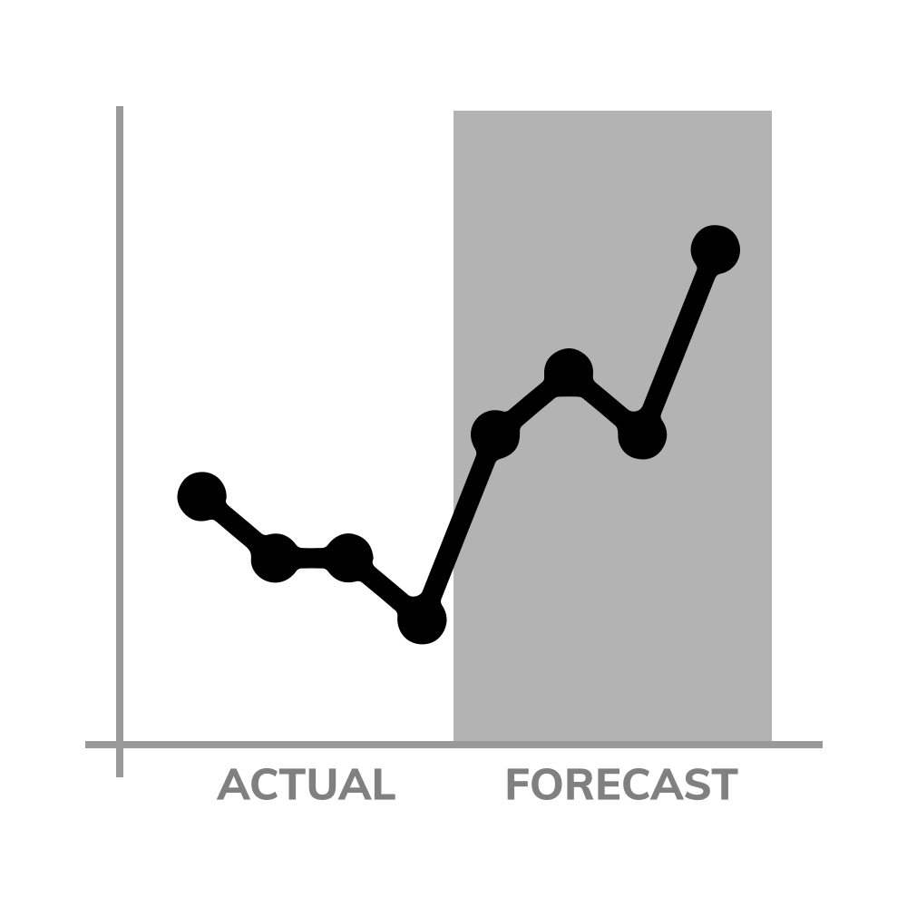
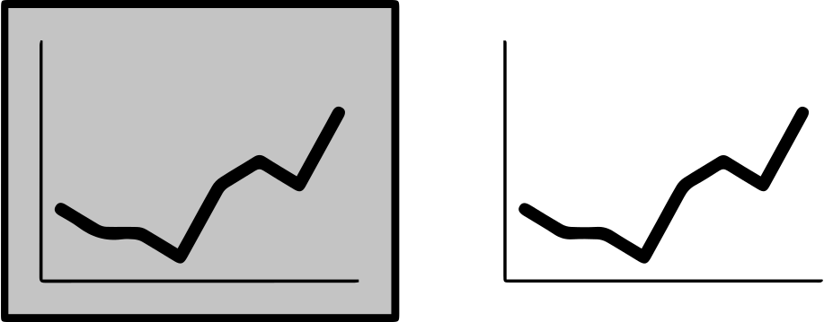
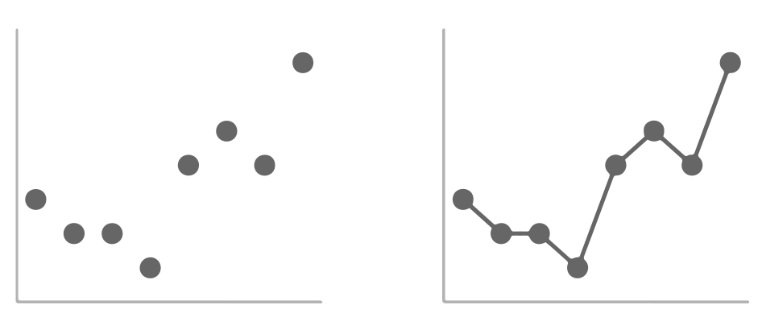

Hover on the left to visualize different Gestalt's principles.
Objects that are kept physically closer appear to be a part of the same group.
You are able to see 3 columns beacuse of the dot spacing and their relative proximity to each other.
This can be leverage in table deisgn in data visualization.
Your eyes are automatically redirected to row or columns based on relative dot spacing.
Objects that are of similar color, shape, size, or orientation are perceived as related or belonging to part of a group

This principle can be leveraged in table design. In the demo, you are able to see columns because of the similarity in colors.
This eliminates the need for using borders in the table to segment to distinguish rows or columns.
Enclosure principle identifies objects enclosed together as a part of same group.
Objects can be enclosed either by a solid line or by shading the background.
This principle can be leveraged to distinguish parts of the visual as shown in fig below.

People tend to perceive a set of individual elements as a single, recognizable shape when they can—when parts of a whole are missing,
our eyes fill in the gap.
The figure on the right appears to be a square even though it is mere a collection of dots.
This principle tells us that borders and shading around a graph created by default properties by graphiing tool are unecessary and the graph without them would appear to be whole.

The principle of continuity is similar to closure: when looking at objects, our eyes seek the smoothest path and naturally create continuity in what we see even where it may not explicitly exist.
The figure on the right appears to be aligned.This can be used in graphic by removing the axes and making the space consistent between labels and graph to give an appearance of continuity.
Connected objects are percieved as a part of a group.The connective property typically has a stronger associative value than similar color, size, or shape but isn’t typically stronger than enclosure,
This principle is frequently leveraged in line graphs to help understand the order in the data.
